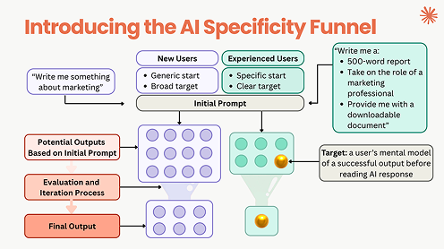
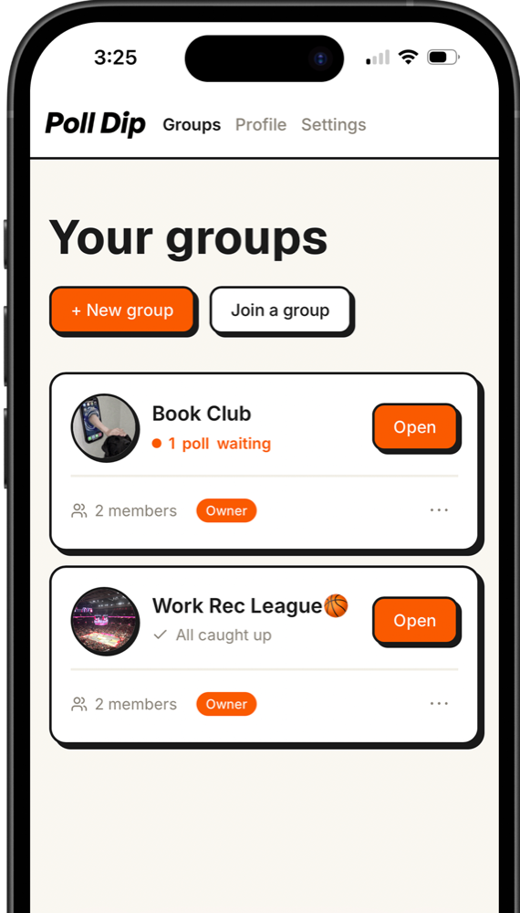
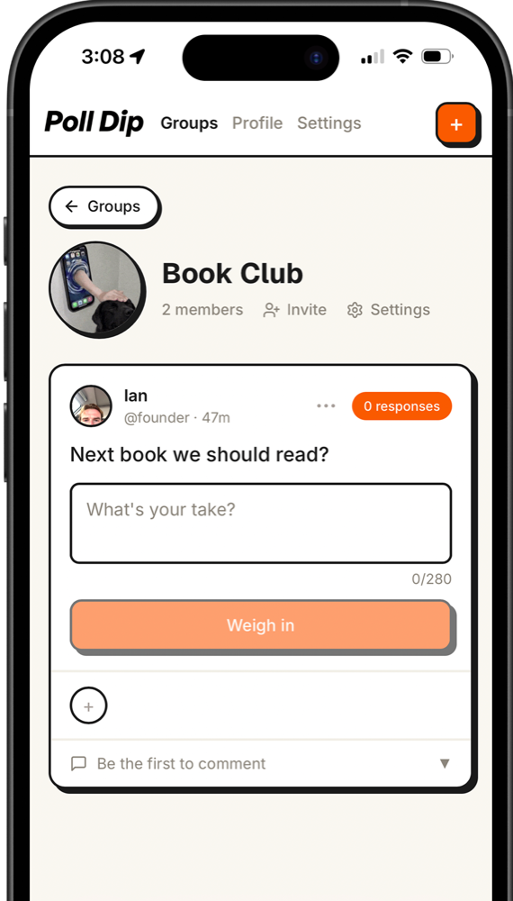

Research Projects

How Users Evaluate AI Answers
UX Research
Takeaway: New users often accepted AI responses that fell short of their own needs, while experienced users evaluated them against clearer goals.

- What: Studied how new and experienced Claude users evaluate responses and decide when to keep iterating on prompts.
- How: Compared approaches through 17 moderated, task-based interviews conducted over Zoom.
- Why: To understand how new users can learn to recognize useful outputs and get better results without spending more time prompting.
- Who: Worked with a four-person graduate research team and 9 new and 8 experienced Claude users.
- What happened: Found that new users often accepted responses that fell short of their stated needs, while experienced users evaluated outputs against clearer goals. Recommended clarifying questions and early-use evaluation guidance to help close that gap.

How User Control Could Build Trust in AI
Literature Review
Takeaway: The literature suggests that meaningful choices and control over personal data could help build trust in AI products.
- What: Examined how users’ sense of control shapes trust in AI products, focusing on product landing pages.
- How: Reviewed and connected research on emotional appraisal, AI anxiety, privacy, and user autonomy.
- Why: To understand how AI companies could address concerns about personal data and loss of control through their product design.
- Who: Completed an individual literature review for USC’s graduate course in human behavior.
- What happened: Identified meaningful choices, transparent data practices, and accessible privacy controls as promising ways to support trust. Proposed an experiment comparing landing pages that emphasize user control with those that emphasize AI expertise.
Built & Launched
Founder / Builder
A simple way to poll your group, settle debates, and see what everyone thinks.


- What: I wanted to give groups and workspaces a simple way to ask questions, settle debates, and see what everyone thinks.
- How: Using Next.js, Supabase, Tailwind, and AI-assisted coding, I designed and built the app end to end.
- Why: The goal was to make sharing opinions quick and casual, without the work of creating a formal survey.
- Who: As the founder and builder, I owned the product’s design and development.
- What happened: PollDip launched in November 2026 with real-time vote counts, emoji reactions, comments, and invite-only groups.
Work Experience
- Conducted mixed-methods user research, UX QA, and competitor benchmarking for a sports platform with over 4M users.
- Led usability testing for a League Import Chrome Extension that helped 10,000+ users migrate from competing platforms.
- Analyzed behavioral data in Amplitude and ran in-app and push A/B tests in Braze to inform engagement improvements.
- Used Claude to support research synthesis and communicate findings more efficiently.
- Supported UX and consumer research for a veterinary telehealth platform, informing product, service, and customer experience decisions.
- Led a two-phase onboarding evaluation, combining an unmoderated A/B usability test of the registration flow with an audit of 2 competitors.
- Used surveys, qualitative interviews, and research analysis to identify user needs and recommend improvements to the digital experience.
- Designed and conducted a mixed-methods study through USC, including 18 in-depth interviews and a 580-respondent survey.
- Identified 4 consumer segments based on needs, behaviors, and purchase patterns, validating interview themes with quantitative analysis.
- Presented product, pricing, and format recommendations to senior stakeholders.
- Conducted mixed-methods UX research with a cross-functional student team through USC to inform product and design decisions.
- Combined qualitative and quantitative findings into recommendations for improving the user experience.
- Designed and built a Figma prototype to support usability testing and evaluate design improvements.
- Analyzed Boeing 737 MAX “stick shaker” incident data to identify pilot responses that contributed to errors.
- Converted qualitative safety reports into quantitative datasets for an airline merger study.
- Identified patterns in post-merger incidents to support the team’s safety research.
- Coordinated the psychology department’s tutoring program, leading weekly meetings and communication between faculty and tutors.
- Used feedback to make adjustments to the tutoring program.
- Explained statistical concepts and provided one-on-one guidance in Jamovi and SPSS.